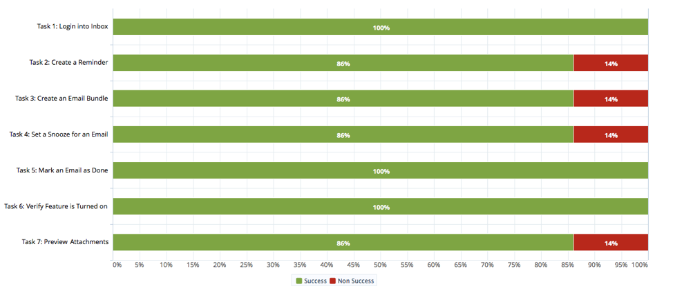
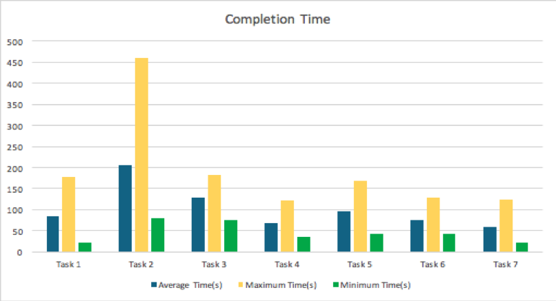

A Usability Study
Overview
Inbox by Gmail is an email service developed by the Gmail team at Google. During its launch, Inbox was described to be “minimalist and lovely, full of layers and easy to navigate". It has several key features including bundling emails by groups, previewing information from Inbox's home page, and setting and snoozing reminders for calls, sending emails, texts, etc. Inbox and Gmail accounts are also synced meaning that actions that occur in Inbox have an impact on users' Gmail account. Our team conducted on-site usability tests at the University of Maryland, College Park, from April 27th to May 5th. The purpose of these tests was to assess the usability of the web interface design and its unique features. This usability study revealed information about what the experience is like for first time users and in what ways Inbox contributes to the increase or decrease in the efficiency of achieving their goals.
Role: UX Researcher
Methods: User Research, Participant Recruitment, Pilot Testing, Usability Testing, Result Analysis, UserZoom
Team: Christine Vaing, Peiyi Liu, Xiaoyu Sun, Jorge Trasmonte, Paige Searles
Duration: 6 weeks
The Goal - "Research Questions"
Through this usability study, we wanted to understand and compare the experiences of Gmail users Vs. first-time Inboxers. To bring more focus and center our research around what we intend to achieve, we defined the following research questions:
- Does Inbox have superior usability compared to Gmail? Why did Google launch another email service/client application?
- What are the usability features and issues of Inbox by Gmail?
- If Inbox has better features than Gmail, why is it not widely known? Why is Gmail still preferred as the primary email service by most people?
Methodology
We recruited participants by sending out emails with our screeners to friends and fellow classmates.The participant screener was developed using Typeform and the form’s link was distributed through emails for potential participants to fill out. For this study, we wanted to recruit people who have been using Gmail and have not used Inbox by Gmail before (first time users of Inbox). We also wanted to restrict the participants to University of Maryland students between the ages of 18 and 35 so that it will help us understand this particular user group in depth and analyze their usability statistics. The pre-test questionnaire helped us collect valuable information like the number of email accounts they hold, the primary email services they use, their proficiency level in using Gmail, and the purposes for which they use Gmail.
After filtering out the responses to the questionnaire according to our usability study criteria, we chose 6 participants out of 21 responses. All of these participants were Gmail users for at least 1 year for different purposes including social, personal, and professional/business purposes, and were first time Inbox by Gmail users.
Usability Study Sessions
We conducted 7 moderated usability tests in total using UserZoom - 1 pilot test at the beginning of the study to evaluate time constraints, wording, and our overall methodology and 6 official tests.
Each session had about 3 people - a facilitator that guided participants through the usability test and encouraged a think-aloud protocol to gain insights on their thought processes, 1 to 3 observers and notetakers to ensure we did not miss any details such as microexpressions and changes in body language, and a participant.
Each session was also made up of 3 parts - a general questionnaire with 5 questions about participants' frequency of email usage, a set of tasks designed to assess the majority of Inbox's features and their usability using emails from a dummy Gmail/Inbox account, and a post-test questionnaire with 8 questions to assess their likelihood of using Inbox in the future and their overall satisfaction ratings. While participants were given approximately 40 minutes to complete the study, our sessions ran from 10 to 20 minutes.
Evaluation Tasks and Scenarios
The tasks and scenarios were created with the intent to cover all of Inbox’s major functions and also to assess how easy or difficult it was to find certain critical information related to using the application. To conduct the usability study of Inbox, we created a dummy account and filled it with emails from the team and promotions from various neutral websites and services.
The participants were asked to perform the following tasks with Inbox:
- Log into Inbox by Gmail: You want to check your email. Log into Inbox by Gmail.
- Create a reminder: You are working on a group project for INST630 and notice one of the group members has sent you an email. Create a reminder to respond to that email tomorrow morning.
- Create a bundle: You recently started cooking more and want to save recipes that you receive in your email. Create a bundle for Food Network Recipe emails.
- Set a snooze: You are currently looking for an internship for the summer and need to remember to apply to jobs this weekend. Set a snooze for the latest Indeed job posting.
- Mark email as done: You are working with another student on a project for one of your classes and need to make sure that the Testudo logo is corrent. You've already looked over the logo and think it is fine. Mark the email containing the logo as done.
- Mark sure setting is on: You receive many emails every week and want to make sure that you are replying to all of your important emails. Make sure that "Suggest emails to reply to" is turned on in your inbox.
- Preview photos: Your friend recently took a trip to Peru this past winter. You want to view the photos, but don't feel like opening the email. View all the photos from the main page
Results
Task Success Rates
All of our participants were able to finish Task 1 (log into Inbox), Task 5 (mark email as done), and Task 6 (make sure setting is on) successfully, while Task 2 (create a reminder), Task 3 (create an email bundle), Task 4 (set a snooze for an email), and Task 7 (preview photos) all have a success rate of 86%. This meant that in each of these aforementioned tasks, we had 1 participant that abandoned or failed to complete them.
Task Completion Rates
To quantify and evaluate task success efficiency, we tracked the average time spent on each task and the number of clicks each participant took.
Task 2 (create a reminder) amounted to significantly longer completion time and clicks to finish compared to all other tasks. The maximum completion time for Task 2 was 7 minutes, 41 seconds and the maximum number of clicks it took to complete the task was 100.
Task 3 (create an email bundle) also amounted to longer completion time and clicks to finish while Task 4 (set a snooze for an email), Task 5 (mark email as done), and Task 6 (make sure setting is on) appeared to have taken less time and fewer clicks to finish compared to other tasks.

Usability findings and recommendations
The following findings were attained and observed from the usability study:
- There was a lack of clarification between "create a reminder" and "snooze."
- There was a lack of clarification for what the compose button on the bottom right corner of Inbox did.
- Participants were unable to create a reminder in the "Reminders" folder.
- Participants were unable to snooze an email in the "Snooze" folder.
- Participants were unable to add all past emails from the same user to a bundle.
- The location of creating a bundle was not apparent.
TThe recommendations we had were based on the usability issues we found while testing Inbox. Each recommendation was based on a specific task from the test. While the majority of the usability issues were mild or moderate, there was 1 issue that was severe and it pertained to Task 2 (create a reminder).
During the usability test, participant 4 expressed that they thought they would be able to create a reminder when they clicked on the '+' button instead of creating a new email. Their confusion led to the following recommendation.
Conclusion
Generally, the majority of our participants had a positive experience with Inbox and found similarities between some of Inbox's features and some of Google's or Gmail's features. For example, most participants did not have trouble logging in or finding the settings because these were consistent throughout other Google applications. Nevertheless, general new features such as creating email bundles, using email bundles, and creating reminders, and the location of features such as snooze and reminders caused issues and posed as challenges for some.
Regarding the research questions that we planned to understand and find answers to after testing, we conclude that:
- Inbox by Gmail does not have superior usability compared to Gmail. Both current UIs are based on Google's Material Design and share many design similarities.
- Google launched Inbox as a separate product with the goal of increasing "productivity and organization."
- Inbox presents a set of unique new features to its users such as bundles, snoozing, and reminders. While some of these features were familiar and/or intuitive to most participants, others posed a challenge to some which we defined as the usability issues.
- After trying Inbox, the vast majority of our participants said that they would still prefer using Gmail. We suspect that this is due to the familiarity people have with the regular Gmail client, as well as its features. Gmail was launched 15 years ago in April 2004.